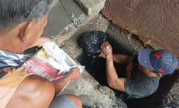
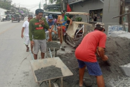
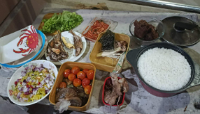

RENATO CABRAL JR.
Noong nakaraang taon, dumaan ang mga bagyong Crising, Dante, at Emong na nagdulot ng matinding pagod at hirap sa aming mga tanod at boluntaryo sa barangay. Sa kabutihang palad, hindi umabot ang baha sa loob ng aking bahay, ngunit umabot ito sa bangketa malapit sa amin. Nang una kong marinig na tatlong bagyo ang sunod-sunod na paparating, inisip kong karaniwan na ito tuwing tag-ulan, ngunit hindi ko maiwasang mangamba para sa mga taong mas matindi ang magiging epekto ng baha. Isa sa pinakamabigat na tungkulin namin ay ang pagbabantay sa mga dumaraan sa pangunahing kalsada, lalo na ang mga hindi rehistrado sa aming sitio. Dahil sa kakulangan ng kaalaman sa lugar, madalas silang maaksidente tuwing baha, at kami ang kailangang maghanap at makipag-ugnayan sa kanilang barangay upang maisunod sa tamang dokumentasyon.


Sa Centro Uno, isa sa pinakamalaking hamon ay ang drainage. Kahit na regular na nililinis ng barangay ang mga imburnal, ang matinding baha ay nagpapalambot sa lupa sa ilalim ng mga kanal, at iyon ang siyang bumabara, hindi ang basura. Kaya’t paulit-ulit naming kailangang suriin at linisin ito. Ang malalakas na pagbuhos ng ulan ay hindi lamang nakaaapekto sa kaligtasan kundi pati sa ekonomiya.
Nagsasara ang mga tindahan ng ilang araw, at napipilitan ang mga tao na maglakad sa kalsada sa halip na gumamit ng sasakyan dahil sa panganib na ma-stranded. Sa kabutihang palad, may mga pagkakataong umaahon ang mga isda sa kalsada dahil sa taas ng tubig, at ang ilan sa mga tanod na mangingisda rin ay nakakahuli at naipapamahagi sa amin upang may maipagluto at makain.

Karaniwan, apat na beses sa isang buwan kaming pumapasok at tumatanggap ng dalawang libo’t limang daang piso bilang honorarium. Ito ay maliit na tulong at pagkilala sa panganib na aming hinaharap bilang mga frontliner. Ngunit tuwing may bagyo, halos araw-araw kaming nasa barangay, minsan ay natutulog na doon, at nananatiling pareho ang honorarium kahit may dagdag na overnight shifts. Para sa akin ay ayos lang, sapagkat ang tunay na dahilan ng aming paglilingkod ay ang komunidad, hindi ang allowance. Isa rin ito sa mga dahilan ng batikos sa amin. May ilan sa komunidad na nagsasabing dapat naming i-donate ang aming honorarium dahil tinatawag itong bolunterismo. Nakakalito kung paano kami tinutukoy: tanod, volunteer, o frontliner ba, ngunit para sa akin malinaw ito. Kami ay boluntaryo dahil hindi kami inihalal para sa posisyon, kundi nag-apply, sinuri, at pinili kung kwalipikado, tulad ng isang normal na trabaho. Hindi basta-basta tumatanggap ang barangay ng sinumang gustong maging tanod. Ang saklaw ng aming trabaho ay mula sa konstruksyon.